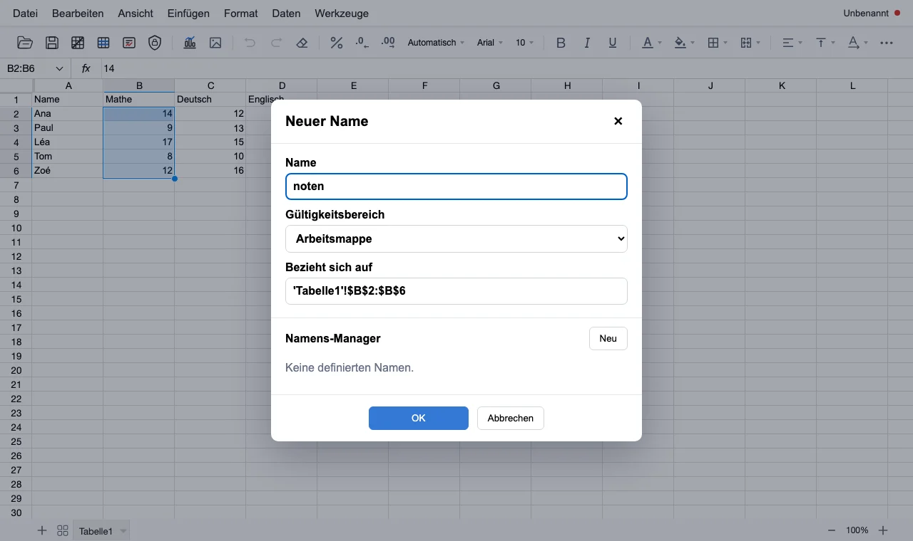

Benannte Bereiche
Einen Namen vergeben
- Die Zelle oder den Bereich auswählen.
- Rechtsklick › Namen definieren… (oder Pfeil des Namenfelds › Namens-Manager).
- Den Namen tippen, den Gültigkeitsbereich wählen, OK.

| Feld | Inhalt |
|---|---|
| Name | beginnt mit einem Buchstaben oder _; Buchstaben, Ziffern, _ und ., ohne Leerzeichen; keine Adresse wie B2 |
| Gültigkeitsbereich | Arbeitsmappe: von allen Blättern lesbar; ein Blatt: nur von ihm lesbar, wo er Vorrang vor einem Namen der Mappe hat |
| Bezieht sich auf | eine Zelle oder ein Bereich samt Blatt: 'Tabelle1'!$B$2:$B$6 |
Einen Namen verwenden
=MITTELWERT(noten)
=preis*(1+mwst)- Der Pfeil des Namenfelds listet die Namen auf: einen zu wählen wählt seinen Bereich in seinem Blatt aus.
- Ist die Auswahl genau ein benannter Bereich, zeigt das Namenfeld seinen Namen.
- Eine Drop-down-Liste kann einen durch seine Adresse angegebenen Zellbereich lesen.
Bearbeiten, löschen
Im Namens-Manager bringt ein Klick auf einen Namen seine Felder zur Bearbeitung zurück; Löschen löscht ihn; Neu kehrt zu einem leeren Namen zurück. Vor dem Löschen eines Namens die Formeln ersetzen, die ihn lesen: sie behalten ihren letzten Wert und werden dann nicht mehr berechnet.
Namen werden in der Excel-Datei gespeichert und daraus gelesen.